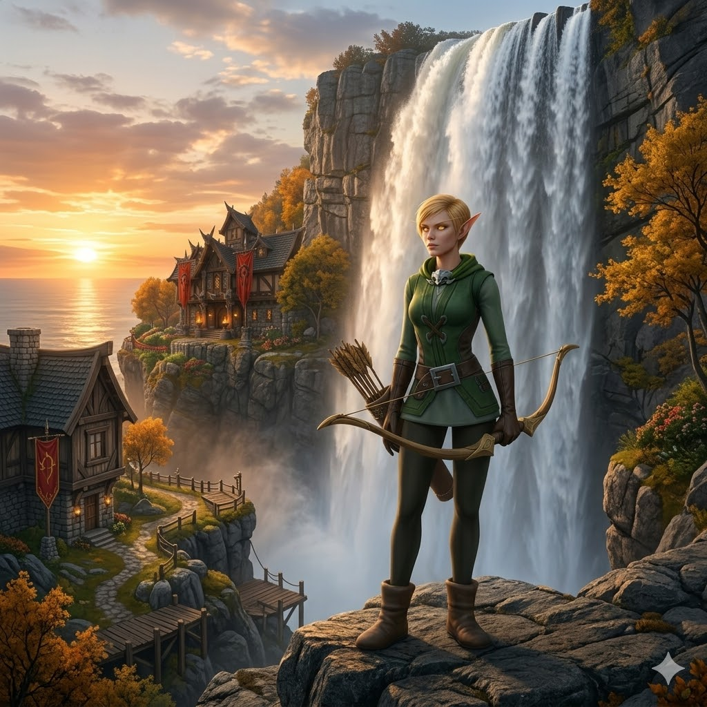

S W R A
"Through hardship and triumph, the Blood Elves emerge stronger. Silvermoon rises once more, unveiling the power and glory of the Sin'dorei."
The Legacy of Silvermoon
The Burning Crusade
Znovuzrození po pádu Sluneční studny a obnova ztracené slávy. Spojenectví s Hordou otevřelo cestu z trosek a definovalo počátek nové éry našeho lidu.
The Gathering Storm
Roky neustálých konfliktů napříč Azerothem i nekonečností vesmíru ukázaly naprostou nezlomnost a vytrvalost Sin'dorei na nespočtu bojišť.
Midnight
Nová hrozba Voidu si klade za cíl pohltit samu podstatu bytí. Avšak naše domovina, Eversong a zlaté věže Silvermoonu, vytrvají jako neochvějná hráz proti stínům. Zář Sluneční studny, v níž se Světlo snoubí s magií Úsvitu, nikdy nepohasne. Naše naděje byla překována v ohni zrady, a proto dnes svítí jasněji než kdy dřív.
Samota u Paladinky

Parcela #48, Razorwind Shores
Můj vlastní kousek klidu vysoko nad okolím. Pevnost a domov zároveň, kde zlato a červeň připomínají náš padlý Eversong.
Proč zrovna tento kout?
Úžasná panoramata na sousedství a hluboké vodopády v dálce.
Dokonalý vizuální kontrast Blood Elf architektury s hrubým Kalimdorským základem.
Útes funguje jako perfektní odpaliště pro plynulý start na mém Dragonriding mountu.
Hřmící ticho

[ assets/khala-plot-zill.jpg ]Obrázek parcely
Parcela #21, Razorwind Shores
Můj vlastní kousek ticha uprostřed věčného hřmotu padající vody. Tohle místo není pro přehlídky v Silvermoonu; je to úkryt vybojovaný na útesech, kde se tříšť vodopádů mísí s pachem mokrého lesa.
Proč zrovna tento kout?
Bezprostřední blízkost hřmících kaskád a nekonečný obzor nad Razorwind Shores, kde se voda tříští o útesy.
Moje praktická hraničářská výstroj a elfské detaily v dokonalé symbióze s divokou, vodou ošlehanou tváří Waterfall City.
Okraj vodopádu slouží jako ideální vyhlídka i odrazový můstek pro plynulý start na křídlech mého mounta přímo do oparu nad propastí.